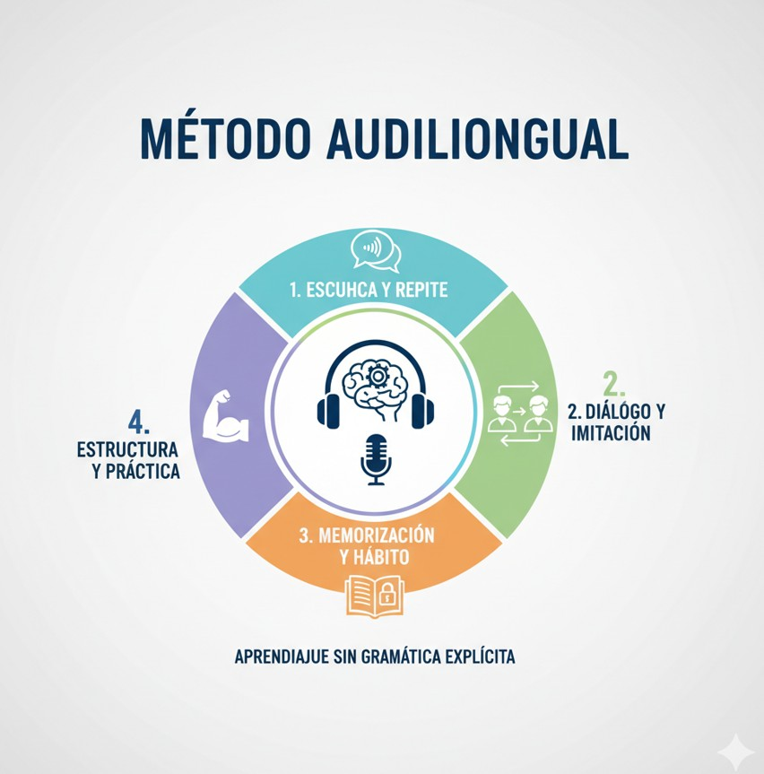

El Método Audiolingual
Aprender idiomas a través de hábitos y repetición

¿Qué es el Método Audiolingual?
El Método Audiolingual fue un enfoque revolucionario para la enseñanza de idiomas que surgió en Estados Unidos durante los años 1940-1950, alcanzando su máxima popularidad en los años 60.
Nació de la necesidad militar durante la Segunda Guerra Mundial de enseñar idiomas rápidamente a soldados. Se basaba en dos pilares: el estructuralismo lingüístico y el conductismo psicológico.
Origen
Segunda Guerra Mundial (1940s)
Base Teórica
Estructuralismo + Conductismo
Enfoque
Habilidades orales primero
Técnica Clave
Repetición y drills
Características del Método Audiolingual
Los elementos clave que definieron este método
×